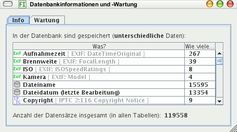

Dieser Menübefehl öffnet einen Dialog mit Informationen über die Datenbank und Möglichkeiten zur Wartung.
Auf dem Info-Kartenreiter sehen Sie die Anzahl aller Bilder in der Datenbank neben dem Dateinamen.

Der Kartenreiter Wartung bietet an, Datensätze zu entfernen, für die es keine Bilder mehr gibt. Das ist sinnvoll, da sonst nicht mehr existierende Bilder bei Suchen berücksichtigt werden.
Das Komprimieren der Datenbank ist in der Regel nicht nötig.